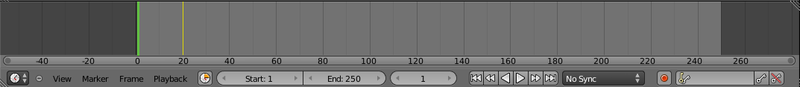

A frame is a snapshot of the scene at one moment in time. An animation consists of displaying a succession of frames representing successive moments in time; if these are shown sufficiently quickly (at least 24 frames per second), the eye is fooled into seeing smooth movement, instead of a succession of still poses.
This is the principle behind both cinema film and digital video. But long before these were invented, it was known that you could make a sequence of drawings on pages of a flipbook, which could then be rapidly flipped by hand to produce an animation.
In live action video, we can capture the frames simply by letting the camera record as the scene unfolds. In hand-drawn animation (cartoons), each frame had to be drawn by a human animator (though there were some shortcut techniques like articulated character pieces, separately-moving scenery layers etc). Actually what would happen was that the most skilled artists would create keyframes representing pivotal points in the animation (starting and ending poses in a character's movement etc), and the lower-paid assistants would have the job of filling in all the intermediate frames to produce smooth movement between those endpoints.
Computer animation works in a similar way, except here Blender is your lower-paid assistant. You go to crucial points in the timeline of your animation, position and pose your objects/characters appropriately, and tell Blender that this is a keyframe for the relevant transformations (positioning/rotation/scaling) of those objects/characters. Then when you run the animation, Blender will interpolate the specified transformation parameters between keyframes, giving you smooth motion over those intervals.
At the bottom of the default Blender screen layout is a window called the timeline. This gives you an overview of your animation.
You can zoom the view in and out with the mouse wheel, or scroll left and right with the middle mouse button.
The numbers across the bottom are frame numbers, with your animation starting at frame 1. The light grey background indicates the total duration of the animation. The vertical green line is positioned at the current frame time, and the current frame number is also displayed in the box between the start/end values and the transport controls, and at the lower left of the viewport in the 3D view window. Yellow lines indicate where keyframes have been inserted.
You can set the current frame time by clicking with the left mouse button at the desired position. You can hop forward and backward a frame at a time with the left- and right-arrow keys, skip to the next or previous keyframe with the up- or down-arrow keys, and jump immediately to the first or last frame by holding down SHIFT and pressing left- or right-arrow.
You can also "scrub" by dragging with the left mouse button across the timeline, which causes the animation to run backwards or forwards at whatever speed you choose, locked to the times across which you drag.
Start by opening a new Blender document. Right-click on the cube in the middle of the screen to select it. Ensure that the timeline is showing that you are at frame number 1. Press I, and choose "Location"; this will insert a keyframe at frame 1 which remembers the current location of the cube. Move the current frame (green line) away from frame 1, and you will see that there is a yellow line left behind.
Now go to, say, frame 25. With the cube still selected, press G, and move the cube to a different position—anywhere a few cube widths away will do fine. Press I again, and insert another Location keyframe.
Now try scrubbing with the left mouse button between the two yellow lines in the timeline, and watch the cube move smoothly between the two positions you set as keyframes.
Now press ALT + A, and Blender will automatically cycle through the timeline for you, animating the cube as it goes. There will probably be a long pause in the motion after it gets to frame 25, because by default the animation will run until frame 250. Press ESC to stop the animation, click in the box at the bottom of the timeline labelled “End:”, and reduce the end frame number to, say, 50. Press ALT + A to start the animation again, and watch the movement cycle through a little more quickly this time.
Stop the animation, go back to frame 1, and press ALT + I to delete that first keyframe. Move the current time away from frame 1, and confirm that the yellow line that was there has gone. Now restart the animation; what happens? You should see the cube snap to the location specified by the only remaining keyframe, and stay there. Without a second keyframe specifying a different value for a parameter, Blender sees no reason to change the value for that parameter to anything else. Hence the rule:
Note:
A parameter is only animated at a particular time if there are keyframes before and after that time specifying different values for that parameter.
Press ESC to ensure the animation is stopped, then CTRL + Z to undo your deletion of the first keyframe above. Press ALT + A to start the cube moving between its two positions again. While it runs, the 3D View window remains fully operational; try using MMB to rotate the view, the mouse wheel to zoom in and out, NUM0 to toggle in and out of camera view, etc. All the while, the cube keeps running through the dance you choreographed for it. How neat is that?
When you're done, press 1 to return to Front View.
{% endblock %}